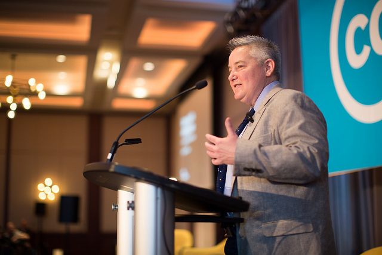

Hari Kedua Konferensi Tingkat Tinggi Dunia Creative Commons 2018 di Toronto, Kanada

Creative Commons Global Summit 2018 (CCGS 2018) atau (Bahasa Inggris) atau Konferensi Tingkat Tinggi Dunia Creative Commons 2018 (KTT Dunia CC 2018) kembali diadakan selama 3 hari yaitu tanggal 13-15 April 2018 di Delta Hotel, Toronto, Kanada.
Kembali diadakannya konferensi ini di kota yang sama semacam menjadi rangkaian kesuksesan konferensi tahun lalu yang tiket masuknya habis terjual. Berikut adalah statistik yang dapat dilihat untuk konferensi tahun lalu:
-
42 “anggota” komunitas ikut serta dalam pengembangan program acara untuk memilih lebih dari 100 progra yang melibatkan “anggota” lama maupun “anggota” baru.
-
Tiket untuk masuk ke konferensi ini kembali habis terjual dengan total hampir 400 peserta.
-
Terdapat 4 tokoh perempuan yang menjadi pembicara kunci, dan tidak ada satu pun sesi yang didominasi laki-laki.
-
Hampir 60 persen penerima beasiswa perjalanan membiayai keberangkatan peserta dari Afrika dan Amerika Latin.
Selain itu, terdapat pertimbang-pertimbangan lain yang menjadi alasan mengapa Creative Commons Internasional (CC HQ) memilih untuk kembali ke Toronto. Kurs dolar Kanada yang rendah mendukung daya beli para peserta konferensi yang merupakan pendatang. Hotel Delta Toronto, yang telah dengan baik menjadi rumah bagi konferensi ini pada tahun lalu, kembali menyediakan tempat untuk menyelenggarakan acara ini kembali. Kebanyakan dari peserta mendapatkan visa dengan masa berlaku yang panjang sehingga mereka dapat kembali ke Kanada tanpa harus mengurus kembali perizinannya. Dan yang terakhir adalah bantuan sekelompok orang yang dapat menyelenggarakan acara dengan skala sebesar ini dalam waktu 11 bulan tanpa dukungan yang signifikan dari CC HQ, kebanyakan dari kelompok-kelompok tersebut berfokus pada isi dari acara ini, bukan masalah birokratis acaranya.
Konferensi kali ini juga menjadi penanda berubahnya pola penyelenggaraan konferensi oleh Creative Commons HQ (CC HQ) yaitu menjadikan konferensi ini sebagai acara tahunan. Diharapkan intensitas waktu bertemu yang semakin padat ini dapat meningkatkan proses pembangunan komunitas CC di seluruh dunia. Dalam hal ini, CC HQ juga meningkatkan jumlah alokasi anggaran untuk beasiswa perjalanan supaya dapat mengakomodasi lebih banyak peserta dari seluruh dunia.
Kerja penyelenggaraan konferensi ini dibagi menjadi dua bagian. CC HQ menjadi “tuan rumah”, yaitu penyedia tempat, makanan, sistem promosi, beasiswa perjalanan dan peralatan lainnya. Sedangkan para “anggota” komunitas CC menjadi pengisi acara dengan program-program yang menyesuaikan dengan tema konferensi tahun ini. Hal ini diupayakan untuk lebih melibatkan “anggota” komunitas CC dalam acara yang menjadi bagian dari gerakan keterbukaan ini. Sebetulnya bulan April merupakan waktu yang amat penuh dengan konferensi (RightsCon dan Open Knowledge Festival), namun CC HQ berhasil menjadi salah satu bagian dari banyaknya rangkaian acara-acara tersebut.
Acara ini mengumpulkan lebih dari 450 “anggota” komunitas yang terdiri dari aktivis, pengacara, pengajar, pejabat pembuat kebijakan, dan pakar teknologi dalam lebih dari 110 sesi yang membahas tentang pendidikan terbuka, GLAM, pembaruan regulasi hak cipta, keterbukaan akses, masa depan komunitas keterbukaan, dan Jaringan Global Creative Commons.
Yang terlibat sebagai pengisi sesi-sesi pidato dalam acara adalah Katherine Maher (Direktur Eksekutif Wikipedia dan Yayasan Wikimedia, Chris Bourg (Direktur Perpustakaan MIT), dan Ruth L. Okediji (Profesor di Fakultas Hukum Universitas Harvard). Pada konferensi ini, CC HQ meluncurkan meluncurkan produk-produk terbarunya seperti Laporan Tahunan: State of the Commons 2017, Sertifikat Creative Commons untuk Pengajar dan Pustakawan, dan pengumuman penerima dana hibah Bassel Khartabil Free Culture Fellowship dan Memorial Fund. Pengumuman ini juga menghadirkan video eksklusif dari sutradara film dokumenter “Ayouni”, Yasmin Fedda. Film ini menceritakan kisah hidup Bassel dan Jesuit Priest Paolo Dall’Oglio, yang keduanya terbunuh di Suriah dalam tugas kemanusiannya. Dalam penyerahan dana hibah ini, Ryan Merkley (CEO Creative Commons) akan juga didampingi oleh istri mendiang Bassel, Noura Ghazi Safadi.
Wikimedia Indonesia mengirimkan perwakilan CC Indonesia Hilman Fathoni (HF) dan Fitriayu (FA) untuk menghadiri Konferensi Tingkat Tinggi Dunia Creative Commons 2017. Pembiayaan keberangkatan ini juga ditanggung oleh CC HQ dalam bentuk beasiswa perjalanan sebesar 1,5000 dollar Amerika untuk masing-masing perwakilan dari Indonesia. Konferensi ini dilaksanakan dalam tiga hari dengan tema yang berbeda di setiap sesi-sesi yang disediakan. Tema-tema itu adalah CC Global Network, CC & New Technologies, Future of the Commons, GLAM, Keynotes, Legal & Copyright Reform, Open Bazaar, Open Education & Open Access, Summit Special Events, unConferencing, dan User Centered Commons. Daftar-daftar kegiatan yang diikuti oleh dua perwakilan CCID di Creative Commons Global Summit 2017 dapat Anda baca di laman ini dan ini.
Laporan acara
Seperti biasa pagi hari di CCGS2018 dimulai dengan sesi sarapan pagi bersama untuk para peserta “newbie” di konferensi ini. Fitriayu sebagai salah satu peserta “newbie” juga mengikuti lagi sesi ini. Sesi singkat yang lagi-lagi dipandu oleh Simeon ini mengulas kegiatan-kegiatan yang dilaksanakan pada hari pertama dan juga menceritakan perkembangan CC di negara afiiliasi lainya, yang salah satunya adalah program Training of Trainers oleh CCID. Sebagai catatan, perwakilan peserta konferensi dari Indonesia kali ini juga terdapat elemen non afiliasi CC HQ yaitu Kathleen Azali dari C2O Library & Collabtive.
Seusai jam sarapan, pada tiap ruangan kembali diadakan sesi-sesi dengan fokusnya masing-masing. Pada pagi hari ini, Hilman turut serta dalam sesi “Translation Working Group Session” oleh Claudia Cristiani, Evelin (Scann) Heidel, Soohyun Pae, Sarah Pearson, George Hari Popescu, Gunnar Wolf, dan Eddie Ávila. Semenjak awal, lisensi CC memiliki ketentuan yang berbeda-beda berdasarkan regulasi masing-masing negara pengadaptasinya. Hal ini mempengaruhi proses penerjemahan ketentuan-ketentuan yang ada dalam lisensi CC. Namun, bagaimana proses penerjemahan dokumen-dokumen selain ketentuan lisensi di komunitas ini? Pada tahun lalu, laporan Faces of the Commons (FoC) menunjukan kebutuhan meningkatnya keragaman bahasa di komunitas ini. Keberadaan hal ini diperlukan untuk merayakan perbedaan untuk menciptakan ruang di mana para penutur bahasa selain Bahasa Inggris mendapatkan kesempatan untuk didengarkan. Ketersediaan informasi dalam bahasa lokal memberdayakan manusia yang terlibat dan dapat meningkatkan angka partisipasi. Inisiatif yang diupayakan oleh “anggota” komunitas dan CC HQ untuk memperluas ketersediaan informasi dalam bahasa yang beragam. Sebagaimana telah diebutkan dalam laporan FoC, “bahwasanya bahasa adalah pembuka di komunitas ini”, suatu hal yang dapat menyentuh latar belakang kebudayaan “anggota” komuntias yang begitu beragam. Tujuan sesi ini ialah untuk memulai pembicaraan guna meningkatkan setiap upaya penyediaan bahasa selain Bahasa Inggris, dan membuatnya lebih mudah diakses.
Pada saat yang sama, Fitriayu menghadiri sesi “Cape Town Open Education Declaration 10th Anniversary: Ten Directions to Move Open Education Forward” yang dipandu oleh Cable Green, Alek Tarkowski, dan Melissa Hagemann. Sesi ini berfokus pada pembahasan hasil-hasil deklarasi di Cape Town tentang 10 tahun pendidikan terbuka. Dengan menggunakan rekomendasi-rekomendasi mengenai pendidikan terbuka dari deklarasi tersebut, peserta sesi dipandu untuk membuat serangkaian daftar langkah konkret. Dengan harap daftar langkah-langkah konkret tersebut dapat dibawa pulang oleh para peserta dan digunakan dalam kegiatan di tempat beraktivitas para peserta masing-masing.

Sesi berikutnya yang diikuti Hilman adalah “Bridging the Knowledge Gap on Creative Commons in Developing Countries” oleh Tracy Kadesa, Isla Haddow-Flood, Aris Maro, Aleck Ncube, dan Esther Ekong. Dasar penyelenggaraan sesi ini adalah kenyataan bahwa beberapa negara berkembang konsep Creative Commons masih dianggap sebagai hal yang asing dan kurang penting. Sesi ini diadakan untuk mengksplorasi penyebab adanya anggapan-anggapan tersebut dan menemukan strategi untuk menggubahnya. Sesi ini sebenarnya akan dilaksanakan dengan membagi peserta dalam beberapa kelompok untuk berdiskusi dan menghasilkan usulan strategis terkait isu yang dihadapi. Namun, karena kurangnya jumlah peserta maka pengampu acara mengubah format sesi dengan mengundang para aktivis yang hadir dalam sesi dan memahami tentang isu sosialisasi tentang keterbukaan di negara dunia ketiga. Seperti yang tertera pada kolom pemateri, kelima pemateri menceritakan pengalamannya masing-masing dan tantangan-tantangan mereka selama melaksanakan sosialisasi tentang lisensi Creative Commons di negara dunia ketiga tempat mereka bekerja. Pada akhir sesi ini, Hilman bertukar kontak dengan Meredith Jacob untuk lebih lanjut berdiskusi tentanng upaya pengesahan peraturan tentang penerapan OER di Indonesia oleh Kementerian Pendidikan dan Kebudayaan. Pada saat yang sama, Fitriayu menghadiri sesi “From Unlocking Free Culture to Reviving American Democracy” oleh Lawrance Lessig. Pada sesi ini, Lessig menjelaskan keterkaitan antara budaya bebas dengan demokrasi di Amerika. Ia menceritakan sekilas mengenai sejarah lisensi terbuka Creative Commons dan kisah tentang martir gerakan keterbukaan, Aaron Swartz. Baik Aaron Swartz maupun Lessig mengawali perjalanannya di gerakan keterbukaan dengan fokus pada lisensi terbuka.
Setelah jam makan siang, Fitriayu kemudian ikut serta dalam sesi “Get Started Producing OER: NDLA, Norway, Has Done It at Scale for 10 Years and We Want to Share!” oleh Knut Inge Skifjeld dan Cecilie Isaksen Eftedal. Pada sesi ini pemateri menjelaskan pengalaman sukses Norwegia dalam penerapan konsep pendidikan terbuka di dalam sistem pendidikannya. Platform berlisensi CC ini selain mudah digunakan juga memberikan dampak positif pada kegiatan belajar mengajar. Karena pengembangan bahan ajar bukan hanya tanggung jawab pengajar saja, maka platform ini membantu murid untuk menyusun materi ajar dengan gaya bahasa yang dipilihnya. Keberadaan fungsi ini memudahkan proses belajar mengajar karena pelajar lain juga dapat memanfaatkan kembali bahan ajar yang diinterpretasi ulang oleh pelajar sebelumnya.
Pada jam yang sama, Hilman menghadiri sesi “Giving Authors Control: How to Retain and Regain Your Copyright” oleh Diane Peters, Vanessa Proudman, Michael Wolfe, dan Brianna Schofield. Para akademisi menghadapi berbagai macam tantangan saat hendak menerbitkan artikel ilmiah secara konsisten dengan prinsip-prinsip akses terbuka dan norma akademis yang sesuai. Daripada berfokus pada aktivitas penelitian dan publikasi artikel ilmiah, para akademisi ini malah terjebak dalam fokus untuk memilih klausa penerbitan artikel ilmiah yang memihak pada penerbit dan kerap kali melucuti hak-hak fundamental mereka sebagai pemegang hak cipta dengan hirarki yang lebih tinggi. Semua ini terjadi tanpa ada bantuan hukum yang layak agar mereka memahami hak-hak mereka sebagai penulis. Hal-hal ini juga dialami oleh pihak yang memiliki fungsi sebagai pembantu aktivitasa publikasi, yaitu para pustakawan. Sesi ini akan membahas praktek publikasi dari sudut pandang penulis dan para pendukungnya. Strategi-strategi terbaik dalam mengupayakan bantuan bagi para penulis ini akan digali sebagai bekal untuk mengubah kebiasaan-kebiasaan kurang baik di ranah publikasi artikel ilmiah. Dalam lokakarya ini, juga akan dibahas tujuan-tujuan serta permasalahan yang sekiranya dapat menjadi ide untuk menyederhanakan dan mengurangi jarak para penulis dengan hak ciptanya, mengklarifikasikan langkah yang harus diambil selanjutnya, dan memperkenalkan alat paling baru yang dapat memudahkan para penulis untuk memiliki kontrol atas hak ciptanya. Pada bagian akhir, kami akan memberikan 3 rekomendasi praktikal bagi para penulis dalam aktivitas publikasi karya ilmiah: yakni mengidentifikasi kesenjangan pengetahuan tentang hak cipta di komunitas mereka, penyediaan advokasi dan perangkat legal yang baik, dan identifikasi strategi dan taktik untuk menarik para penerbit tradisional supaya memahami hal ini.
Dalam sesi ini, para peserta dibagi menjadi beberapa kelompok dengan fokusnya masing-masing. Hilman Fathoni ikut serta dalam sesi perumusan langkah-langkah terbaik dalam menjawab pertanyaan tentang kebutuhan-kebutuhan para penulis karya ilmiah sebagai penyedia advokasi. Dalam kelompok kecil ini Hilman turut menyumbangkan ide berdasarkan pertanyaan-pertanyaan yang muncul pada lokakarya-lokakarya lisensi CC sebelumnya. Ide yang disumbangkan antara lain adalah bagaimana para aktivis dapat memberikan contoh-contoh yang baik mengenai bentuk-bentuk adaptasi karya ilmiah berlisensi CC sebagai “impact factor” dari karya ilmiah tersebut. Peserta lain yang terdiri dari pustakawan, akademisi, dan mahasiswa fakultas hukum juga turut menyumbangkan ide-idenya. Ide-ide tersebut dicatat oleh TimVol dari CC HQ untuk kemudian disatukan nantinya bersama rekan-rekan Authors Alliance dalam rangka pengembangan alat bantu praktis pengenalan hak cipta untuk para penulis.
Memasuki waktu sore hari, Fitriayu menghadiri sesi “How to Bring CC Into Education” oleh Peter Leth dan Rikke Falkenberg Kofoed. Pada sesi ini pemateri menceritakan pengalamanya dalam menyebarkan pengetahuan mengenai lisensi CC kepada anak-anak. Dengan menggunakan platform H5P.org (yang memberikan pilihan lisensi terbuka CC) Peter Leth mendemonstrasikan bagaimana mudah dan bermanfaatnya lisensi tersebut dalam penyediaan konten pendidkan terbuka. Sesi selanjutnya yang diikuti adalah “What Good are CC licenses if they are applied incorrectly?” oleh Sarah Pearson dan Judith Blijden. Sesi ini membicarakan solusi secara teknis mengenai masalah kesalahan penerapan lisensi CC pada suatu ciptaan khususnya ciptaan yang terlah masuk ke domain publik. Cultural Heritage Institutions(CHIs) menjelaskan bagaimana mereka mengatasi permasalahan tersebut dengan pemberian edukasi melalui program sertifikasi seperti Sertifikat GLAM CC, atau penyediaan sarana teknis yang berfungsi untuk mencegah kekeliruan penerapan lisensi CC yang memuat kebijakan pemilihan lisensi CC.
Salah satu sesi sebelum jam sesi-sesi paling akhir pada hari tersebut yang diikuti secara bersama-sama oleh Hilman dan Fitriayu adalah “Makers Et Al at CC” oleh Fatima Sao Simao, Sam Muirhead, dan Andre Rocha. Sesi ini membahas bagaimana lisensi CC diterapkan secara salah oleh komunitas-komunitas yang berkaitan dengan gerakan Perangkat Keras Terbuka (Open Hardware). Keberadaan hal ini menjadi tanda bahwa banyak komunitas-komunitas di luar subyek perlindungan hak cipta yang tradisional, menggantungkan diri dalam skema perlindungan hak cipta terbuka dari CC. Dalam hal ini, para pemateri juga hendak mencoba kemungkinan seberapa luas model jaringan global baru CC untuk berkolaborasi dengan komunitas-komunitas ini. Pada sesi ini kedua pemateri mempersembahkan karya-karya buatannya yang termasuk sebagai Perangkat Keras namun dilisensikan dengan lisensi terbuka. Perangkat Keras-Perangkat Keras ini dianggap sebagai obyek-obyek yang sebenarnya kurang cocok jika dilindungi dengan skema perlindungan hak cipta. Hal yang diusulkan oleh para pemateri ialah penerapan skema lisensi Perangkat Keras Terbuka (Open Hardware license). Selain itu diterangkan juga bahwa penerapan lisensi ini berada di ranah skema perlindungan karya sebagai obyek perlindungan desain industri.
Sesi paling akhir pada hari itu diikuti oleh Hilman, yaitu “CC for Data Producers: What Does It Mean to Make Data Usable?” oleh Jane Park, Diane Peters, dan Timothy Vollmer. Sesi ini membicarakan kemungkinan tentang bagaimana para penyedia data dapat membagikan serta saling menggunakan data yang mereka sediakan dengan lebih baik, baik secara legal, teknis, dan terbuka. Tujuan yang hendak dicapai adalah aktivitas tersebut dapat menjadi salah satu elemen pendorong kolaborasi yang inovatif dalam pemajuan masyarakat. Pihak CC HQ akan melaporkan perkembangan dari upaya untuk menjawab pertanyaan-pertanyaan tersebut. Para peserta sesi diharapkan dapat turut serta merancang langkah-langkah strategis dalam menjawab permasalahan tersebut. Selain itu, karena data adalah salah satu lingkungan yang baru dalam gerakan keterbukaan CC, hal ini dapat membantu proses identifikasi tentang seperti apa bentuk dari lingkungan baru tersebut dan siapa saja yang seharusnya diajak bekerja sama dalam pengembangannya.
Pada awal sesi peserta diajak saling berkenalan satu sama lain dan diinstruksikan untuk menyebutkan proyeksinya mengenai data dan pelisensian ciptaan. Hilman mengutarakan bahwa tujuan keikutsertaannya dalam sesi ini adalah untuk mengidentifikasi bentuk data seperti apa saja yang layak untuk dilisensikan dengan lisensi hak cipta, khususnya lisensi CC. Di dalam sesi ini juga peserta diberi kesempatan untuk menceritakan kasus menarik tentang data dan penggunaanya secara kolektif dalam suatu aktivitas yang berdampak sosial. Dalam hal ini Emilio Velis dari CC El Salvador menceritakan hal menarik tentang bagaimana para pengguna internet di El Salvador berkontribusi pada satu laman google docs spreadsheet untuk memperbarui kumpulan data tentang informasi bencana alam banjir yang sedang terjadi di negara tersebut. Hal yang menarik adalah setelah bencana itu usai, dokumen tersebut ditutup aksesnya untuk dapat disunting dan kemudian diklaim oleh satu pihak kepemilikan hak ciptanya. Padahal data tersebut disusun secara bersama-sama oleh banyak orang sekaligus dan memang disediakan untuk digunakan seluas mungkin oleh publik.
Catatan: Beberapa notulensi dari sesi-sesi ini dapat Anda akses dengan membuka tautan pada setiap judul sesi yang disebutkan.
Tags:
Oleh: Creative Commons Indonesia
13 Jul 2018Kategori:
Berita Terbaru
- Lokakarya Hak Cipta dan Lisensi Creative Commons di Pekanbaru
- Pengumuman Resmi: Hasil Akhir Training of Trainers Creative Commons Indonesia
- Literatur tentang Model Bisnis Terbuka "Made With CC"
- Data dan Artikel Ilmiah Terbuka dari PLOS!
- Konten Format Model 3 Dimensi Berilsensi CC di Platform Sketchfab